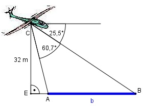

Aufgabe 131 Ein Flugzeug befindet sich in einer Höhe von 32 m über einem Fluss. Welche Breite b hat der Fluss, wenn seine Ufer vom Flugzeug aus unter den Tiefenwinkeln 25,5° und 60,7° angepeilt werden?

Im Dreieck EAC: Winkel bei A = 60,7° + 25,5° = 86,2° 32 m tan 86,2° = ------- |*EA EA EA * tan 86,2° = 32 m |:tan 86,2° 32 m 32 m EA = ------------ = ---------- = 2,1 m tan 86,2° 15,0557 Im Dreieck EBC : Winkel bei B = 25,5° 32 m tan 25,5° = -------- |*(EA + b) EA + b (EA + b) * tan 25,5° = 32 m |:tan 25,5° 32 m EA + b = ------------- |-EA tan 25,5° 32 m 32 m b = ----------- - EA = -------- - 18 m = tan 25,5° 0,477 = 67,1 m – 2,1 m = 65 m